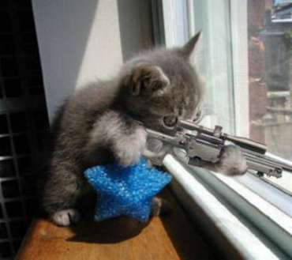

So, most of you will have read The N Times, the not-so-successful successor of The Sunday N, and most of those will have realised that opinion is divided as to its merits coughkkstrong0cough. Well I believe they (or at least Animator) said somewthing along the lines of 'you think this is crap then go do better' so no-one should be pissed that I'm doing this. Hopefully some of you might even enjoy it...
I will try to keep this thing weekly i.e. every Wednesday or earlier if I'm not gonna be able to get on.
Keep in mind that I only decided to do this right now, which means nothing till next week. If anybody wishes to help me with stuff, please feel free to do so but remember, if I don't like it, I probably won't include it. Every week that I review starts on Wednesday and ends on Tuesday.
I could do with a title if anyone has any suggestions.
Some nice things here by PALEMOON. A weird touch with the double rockets and triple doors makes this an aesthetic masterpiece. Gameplay was great, but not as great.
Well lookie here! A bit of excellence from Mirage. Cooby and MidnightGetaway by the looks of things. I took ages to get that reverse corner kick without hitting the damn drone and then I go and muck up right afterwards! Awesome map, almost unimprovable.
Awesome little adventure style map by Why_Me - Confections of a Hotdog Stand. Pretty high difficulty level, I tried in vain to get all the gold, very fun nonetheless. Neat little gauss in the top left, but the others were pretty tough! The overall design is pleasing too.
He revised it.
A little magic from the wizard: humid. Utilises that old thwump not going for you when you stand on a five tile trick. Pretty good structure to it as well. Not too difficult.
A Race! Precision jumping, as it says. Too high and you die, too low and you die, you have to get it right every time. Good stuff from Bunniesandsheep.
If you like open air dodging, this is the map for you. Avast the Seven Seas by MaximumRide. One of my favourite authors of all time. He has alot of maps.
I never used to like this guy's style much much. I think it's changing for the better. yahoozy_Guacamole gives us Sharks and Storms. Some extremely fun dodging to be done collecting the gold on the left hand side of this map.
We all know him. One of the few people who I would say has mastered the art of map-making. Extraordinarily, he manages to retain an air of originality beyond his 1000th map. Here we have Our Magic Show.
This is a beast! GreenEggsAndHam is probably the most active female mapper (correct me if I'm wrong) and only has seven unrated maps. Get rating! Some good seeker-drone enjoyment to be had from this little beauty. Actually, Sendy will have more maps, won't she?
Today is a good day for the devotees of N. uNcoNditioNal shows us how it's done with Out of space. A 'tread softly' kinda thing going on here along withsome open space chaingun mauling and the odd rocket death. Slightly obscure but in a good way.
No offence to Mr Mongoose and Southpaw, but isn't it great how this collaberation is so much better than the sum of its parts? Pretty intense with two rockets and a chaingun targetting you sometimes. However, this map is ber fun no matter how trying it can be to AGD.
DW40's Corrupted Doughnut. Tight, with a good seeker drone path and a lethal chaingun. Very good use of E tiles. Overall, extremely enjoyable and pleasing to beat.
Why_Me's second great map so far this week. Nonchalantly isn't really how you have to play this to win - it's quite fast-paced.
A beautiful tileset by some guy I've never heard of - Sofranko by draconem007. It's an insect. It's also very playable.
A party in a forest! GreenEggsAndHam is throwing this for no apparent reason and we're all invited with as many mangoes as we could dream of. Woooo! I went to a party in a forest once. One of my register-classmates got pregnant then. Her boy is due within the month. Moral of the story - never have sex with an orang-utang because their semen dissolves condoms. So there.
And to maintain our modesty while we have our rumble in the jungle, Pheidippides'
Canopy. I like those gold blocks, they're hard but not as annoying as 3x3 blocks which I always seem to get eight of. Enemies pressurising but not overwhelming. It's more linear than it looks at first glance (if you're goin for speed, that is). Pheidippides had an exemplary map-pack released relatively recently. Actually, Dialogue was released four or five months ago, which is over a third of my stay on metanet so far ago. Dunno why I think it's recent, maybe it's just too stunningly brilliant to be constrained by time.
Zehr Gut! Be_Happy_:) created this map from Brttrx's tiles. It utilises some rather dangerous thwumps guarding the gold.. Very good in all aspects of play.
*sigh* It was resubmitted.
Another collab. By MaximumRide and uber_haxor (I'm afraid I can't find a link for this guy.) Fairly simplistic, this one offers some harmless fun. Watch out though 'cos I died falling onto that trampoline. I thought it would save me >:(
Fasten your seatbelts. You'll need to be goin' pretty fast to do this one. Another by uncon.I got pretty flukey on this one and managed to get an awesome looking but not that good AGD. Try it, it's fun.
Cool Some N-art. By Cossack. He's really into the N-arts, apparently. He's been around since May 2006, contrary to what some people think. He only has 37 maps though.
A boring day for NUMA, I'm afraid.
A third collab. Between MaximumRide and Skyline. Fairly easy with a nice tileset. Looks like MR is into collabs at the moment. And races.
One look at the thumbnail and you'll know who made this one: Go, Go, Go Little Queenie! I thought it was more of a race than an action, but it reeked of fun anyway.
A comeback! No not really. Martyr is dormant, but this proves he can still make a helluvan action map.
You don't often see floorguards in DDAs, let alone really good ones. [{NO3 (his name mucks up the coding) presents Glitchcraft vs. Necromancy.
He doesn't have a paticularly good map, but this author just sprang from nowhere.
Brought to you by The_apprentice.
BOO!
Can I say horrible? The player has barely a second until he gets sniped by the psy-turret, so it only lasts 3 seconds.
Aesthetics: Half N-art, but the inside of the skull is very boxey.
Gameplay: Impossible!
Fun: See above.
Flow: See above.
Gold placement: Okay placement, too bunched though.
I reckon I should get me some of them french fried potaters MMMMMMMMHM
Another level by the beloved blue_tetris, with some shameless advertising. Decent use of the guass turret, not much threat by other means.
Aesthetics: Probably intended to look like a diner, a lot of the useless objects still were a distraction.
Gameplay: Everything that a good level needs, still a bit unfulfilling though.
Fun: Decently addictive, I went back for seconds.
Flow: There was a rhythm, but the player did have to stop and wait near the end.
Gold placement: Well, the gold was there but it was out of reach.
Rocket jump
Action maps in their most common form.
Aesthetics: Pretty decent, some distractions though. There was a NaNed bounce block and some unnessesary features such as the double exit and the cluster of 6 rockets.
Gameplay: Unnessesary launch pad chains, a hard to reach exit switch but some well placed bounce blocks prevent falling deaths.
Fun: I had to play until I beat it, but the ending was getting frustrating.
Flow: Not really needed in an action map.
Gold placement: Squished with the rockets, provides a good challenge.
Gauss Barrage V1.1
Total overuse of guasses, with symmetry.
Aesthetics: A lot of distractions and unnecessary objects. The normal doors and one-ways in the middle don't do much, and neither do the thwumps that guasses down the bottom. More useless guasses at the top and some useless launch pad-bounce combos bring it down.
Gameplay: All it really is is a wall to climb.
Fun: Goes from decent to horrible in 3.5 seconds.
Flow: Deliberately interrupted flow at the beginning, no running after that.
Gold placement: Didn't exist.
Desolation Row
Nominated for a snipie. For using Laser/chaingun turrets.
Aesthetics: A hint of an errorred screen.
Gameplay: Great for an AGD.
Fun: Very frustrating towards the end.
Flow: Going up is a nightmare.
Gold placement: Very nice.
O.K., many thanks to The_apprentice and smort for helping me complete this issue. That's all for this week folks. I look forwards to next week's already.
Really good fun from the northman: for the sake of chaos. Just a thing with drones. Trap doors. Brilliance.
Nothing else noteworthy
Gret tileset. Not so great level, but still good. Thanks, numa_ninja. Quite hard but Fun with a capital 'f'.
Dark_Denstiny made this set of tiles. Like some sort of tatoo thingy with rotational symmetry.
A masterstroke by ska. I don't think the first room's that good but it improves, trust me.
[http://numa.notdot.net/user/astheoceansblue]Astheoceansblue[/url] created this. Very bouncey and free-flowing.
Looking for a challenge? Look no further. Kablizzy is the man behind it's excellence.
This certainly deserves a mention, an ace tileset by what looks like an up and coming author.
An innovative little middle section in this map: Life. Romaniac's always been a great inspiration to me, and his levels continue to amaze.
Spindrift is not the kind of map Wizard2 normally makes. He is usually into DDAs or sometimes actions.
]Cerberus[] made this map: Roots, horses. I like him. He gave me very handy advice on my first map. Or maybe it was Cossack.
Seven_two's Something certainly belies any conventional name. Yet it has teeth and at least one nostril, if I'm not very much mistaken. It's a tileset, by the way.
It's transpired that [url-http://numa.notdot.net/user/MaximumRide]MaxRide[/url] does in fact have intimate relationships with old women. He made them. All of them.
He's right, it is relaxing to play - I was Feeling Hollow, Green_Ghost. I never use surface follow zap drones. I don't know why 'cos they're really effective.
If enemy-spammed DDAs are your thing, I'm sure you'll like this. B3njamin's the creator.
A little light amusement from GEAH. Very fun and not at all hard.
Spikes must have a sedative effect on me, because this also seemed relaxing but it was still pretty tricky. Pipsy by DW40.
Another nice tileset. Courtesy of monkeyfish. Look again if you didn't see the first time - I didn't.
A very enjoyable race by calamity7 - Part 8:Epic Endeavour.. It amazes me how so many frames of race can be created when the loops are this big and the map space so small.
Here's an epic adventurey level: Uncovering the Parasites by Pheidippides. Pretty hard, pretty long and pretty ugly. In a good way, though.
A fun action map, Lost Symphony. Wizard2 seems to have developed well as an action author.
A relatively hard map by yahoozy - Inertia Creeps.
Very interesting. Nooks&Crannies by Losttortuga.
Absolutely addicting. Should be taken off the market because it's stopping me from getting to the other maps. NIGHTMARE619's Carnival Dancer.
The Elefant and the Ostrich by MaxRide. I'd really like too some decent AGDs for this, get goin'!
Mine Jumper, anyone? Shortshift.
This guy really likes making tilesets. Here's one of his best.
Apparently, Zenith is coming.
LOVE the gold placement here. It didn't feel empty although it was, which is very good. Mrgy05, with Run Away Baby
Once again my commenting has started with a n00b map, this time spanish.
Aesthetics: Reminds me of a poorly drawn cartoon character with lack of sleep. Rockiness in the middle disrupts the whole n-art theme.
Gameplay: Hopelessly hard parts coupled with DDA style launch pad chains.
Fun: Not really what I'd spend too long on, could only be completed section-by-section, and even that was annoying. Not to mention the boring repetitiveness caused by going back and forth over the exact same course.
Flow: Getting off the ground is impossible, while once you're up there any movement is controlled by the launch pads.
Gold placement: [Looks]Where is that stupid Ow!(runs into screen)[/Looks]
Justice is Blind, but Revenge is 20/20.
A race without the running.
Aesthetics: Looked decent, would have helped if I could see the laser drones though. The decoration in the bottom-right seemed like a better looking level though.
Gameplay: Didn't serve too well as a level, should be challenging but this was just depressing.
Fun: Not very fun, only motivation was to see if any of it was decent.
Flow: Not obvious, or effective, as the laser drones prevented any flying or high jumping.
Gold placement: Out of place, and if reachable, a trap.
Drone Jumper
An attempted prisoner without the player being trapped in the first place.
Aesthetics: A lot of unnecessary drones, some of them moving out of time.
Gameplay: Done in 2 trys, most of the level is unused.
Fun: Only really applies if the level takes more than 60 seconds to complete.
Flow: Wasn't supposed to be any flow, and there wasn't. It's just up the right and bungie jumping on the left.
Gold placement: N/A, or as N lovers say, NaN.
1.21 jigawatts?!
Enemies are all safely locked away.
Aesthetics: Not too many distracting elements, some unnecessary objects though.
Gameplay: Very little moving, a lot of waiting. The bottom left and right were the hardest parts, and they weren't exactly a james bond movie. I should also point out that the two switches at the top of the bottom section are not necessary for completion, you can just win through the door .
.
Fun: Not much moving, it's like a puzzle without the pretty picture of a donkey at the end.
Flow: Non-existance.
Gold placement: In the last place that it should be, an annoying two pieces sit on top of a mine and mock me too.
Climbing A Tree
One of the best levels I've rated today?! Because there was no competition!(and it was pretty good too.)
Aesthetics: Looks like a tree from far away, looks like a physical impossibility up close.
Gameplay: Decent mine jumper, with carefully timed jumps necessary.
Fun: Had to keep playing because it looked easier than it was. Just like all mine jumpers.
Flow: File not found.
Gold placement: Nice, carefully locked away between mines.
Unfortunately, smort didn't have enough access to his computer to complete Nterviewed in time. Hopefully it'll be up in a couple of days.
The Wanderer, Part One by skyline. Fun and open-ended. medium difficulty.
This felt like an arena. I know not why. MARTYR!
The Wanderer, Part Two. Same author. Notice the recurring themes?
This man is a tileset man.
A deceiveingly ugly map by joshwapiano. Well, it's not that ugly
Very interestingDeadly Strand by BuddyLee. Pretty original.
Some more original material. Kind of. Author=krusch. It's his 100th map.
This is worth seeing just for its beginning. mrgy05
That darn hippie is at it again!
A really fun to play level here from thedupli. For turtle's new competition.
Weird-ish things by pepi321. Fun in a weird-ish way.
Purgatory by Onesevennine. I just realised that this is this other number guy with a name change. I think. No, Oneseven nine doesn't have that many rated maps. It's seven two I'm thinking of.
A collab between MaxRide and lord_day: How It Should Have Ended.
A seeker drone path map. Arranged by condog_111. Not too difficult in parts, but it's lengthy so completion is quite hard.
A strange race called The Mountain Beast Roars. Martyr apparently isn't having a comeback. Pshh.
Nice tile art of the Kraken by condog
Beat the AGD url=http://numa.notdot.net/map/110474]here[/url]. Thedupli made this. Very fun.
This map by calamity7, you have to play. It seems threatening throughout and the tiles suit the clumsy, yet excellent, gameplay very well. Even the lack of gold was a good thing, giving the player no sense of direction at all.
An impeccable minejumper. From Mirage.
Faith in the Silhouette (in the Shadows). A collab between lord_day and BuddyLee.
Nothing much.
Large Headed woman
Read the description . For some strange reason it reminds me of this:
. For some strange reason it reminds me of this:
, with a bigger head.
Aesthetics: Interesting, yet a tad embaressing when you realise where the gameplay is focussed. Gets annoying when the rocket fires past the door, and you get so distracted by it that you get hit by the guass turret.
Gameplay: Pretty decent, though people who haven't been to st atilla's would get stuck at the perpendicular jump.
Fun: I got really annoyed at how at the start I had to manipulate the crossbows, so I cheated past that bit.
Flow: Not exactly a race, but it did encourage close calls at the top.
Gold placement: Not very spread out, helped with knowing where to go though.
NecroTech / Breach
Nice idea, particularly with the zap drones. This trick, however, makes the level very cheatable.
Aesthetics: Outside is pleasing, but the inside is fulled with useless objects. The bounce blocks are also unnecessary.
Gameplay: Beat it early on, mostly because of the cheatablility. I do, however, like the use of zap drones in two square corridors. This is because you can always make it out of the situation, you just don't think fast enough.
Fun: Relatively easy, and the two square corridors keeps you kicking yourself.
Flow: Okay, biggest threat to it was the zap drones and the one-ways.
Gold placement: Takes advantage of one-ways and your vulnerability to zap drones while next to them.
Small tunel(should be tunnel)
Can anybody say prison riot?
Aesthetics: No unnecessary parts, no art to it though.
Gameplay: I wasn't exactly leaning on the keyboard while waiting for the chaingun to come.
Fun: Took me a try or two to get the chaingun timing each time, wouldn't do it without the respawn.
Flow: I had time to make myself lunch while waiting for that chaingun.
Gold placement: You could risk it with the chaingun drone if you wanted it, you only had to do it once though.
I was bored.
Celebrate good times! A DDA! Because it is not a usual level, I'm doing it different.
Length: Short, but I'll cut it some slack since it's a mini level.
Speed: A bit of stopping halfway through, not cheating slow though.
Close calls: Nice, considering that he was using laser drones.
Propulsion use: Nicely timed thwump, okay for a confined space.
Penalties: Used launchpads and gold delay. Tsk tsk.
Tower O' Power
Definately not a survival.
Aesthetics: A lot of unnecessary and distracing elements, not much wrong with the tileset though.
Gameplay: Tough in some parts, DDA in others.
Fun: Got fed up very fast.
Flow: Evidently his first playable level.
Gold placement: Gone, along with anybody attempting to finish it.
I love max_ride. He's a great author, and he's really starting to gain a lot of fans. I tried something different this week. I held the interview in an IRC channel and let people watch. I probably should have asked mam first. Anyways, next week, I might voice people at the end and let them ask questions. So, if you see me on IRC saying there's an interview going on, come and watch! (nothing wrong with that, sound like a good idea - mam)
smort- You recently made a Level Pack named "Ann Arbor, Michigan", which has been widely successful. I know LV made the title, but is there anything special behind it? What about the levels; is there anything special about any of them?
max_ride- There was actually nothing special behind the title, he just said it and it sort of just sounded catchy. I have also made another map pack named Chocolate Qorn with frogs but it didn't seem to get any recognition, and I didn't want that to happen again.
smort- Although you've probably just answered this. Anything else you want to say about the level pack?
max_ride- As for the levels. A while back martyr started a map pack, which he invited so many people to participate, and I was one of those people. Each person was going to make one column and then we were going to put them all together into one pack. As you probably know, martyr then lost interest in N and just sort of "dropped" the map pack. I decided that since I already had 3 episodes, I would just build off of that.
smort- Where do you usually find inspiration for your maps?
max_ride- I usually get inspiration from other mapper's levels that I enjoy playing. Sometimes when I take some quite time and just think. Sometimes the levels I think of turn out successful, but other times they are crap. Sometimes I even dream about levels that I have never played and then I try to take scraps from my dreams and turn them into level.
smort- You are an author who is really starting to grow in popularity. What was the largest hurdle getting where you are, or was it smooth sailing?
max_ride- I definitely had many hurdles I had to get past. Early in my career I was a multi-accounter. I multi-accounted because not many people noticed my maps so I rated them up so people would notice them. After I was found out to be a phony I was banned for three months from NUMA. I sat and counted down, day-by-day waiting to be unbanned. When I got banned I learned my lesson that just because people don't notice my maps, it doesn't mean it is the end of the world. I think after multi-accounting people really lost respect in me, which I don't blame them. I slowly had to start making better maps and tried to start helping the community more in order to gain some respect back.
smort- Well, that's all actually. Thanks for your time, it means a lot.
max_ride- Alright. Thanks for choosing me to Nterview.Thanks to smort and The Apprentice for helping me out again.
The Epic by three devoius conspirators going by the name ofDelirium. Just another fun action map.
Ahahahahahahahaha
Fly Solo now. Do it.
Why, sir, it's a Foot Race. Absolutely brilliant map. You really have to play it.
ATOB says: cars pass in cold blood.
Awesome N-art from mrgy05.
QUORNSTAR
Some Great use of one-ways right here, thanks to thedupli.
Amazingly replayable. And totally intense though it doesn't look like it. MaxRide
Cardigan by Mekkah
Oho! Could do without that spot on his chin though.
I'm never gonna win that thing with competition like this from thedupli.
Nicey nicey map. GEAH
Second Grace Cathedral Hill by epigone. Nicely constructed and rather flowy
A few DDA kinda things going on in this KRA no-jump race. AN3S is the author.
You like a fairly challenging map? You'll love this one then. Mrgy05, as we all know, is master of many map types.
This level wants to be highscored. And it wants it HARD! From Mekkah.
<darn_hippie> Want to be Nterviewed?
<blue_tetris> Sure, yeah.
<darn_hippie> Ok, cool
<darn_hippie> How does it feel to make the hardest level in the game, and also to be /in/ the game?
<blue_tetris> It's weird. I never really expected that it would be in the game at all. So, before I can really address how I felt, I should give you some history. Back in the heyday of NUMA, the place was where it was all at. There was a forum up, but I never went there. To me, it felt like I was drifting too close to nerdsville when I looked at it. But I loved NUMA. I made a handful of maps, and then left for a while. The new N got released. People played it. They saw my level. I never even knew it had made it.
<darn_hippie> haha thats cool
<blue_tetris> Months later, I joined the forums and it was if I was already Mr. Popular. I was quickly accepted, because my level was already well known.
<darn_hippie> so you were an instant star?
<blue_tetris> More or less, yeah. There were hundreds of people
playing my level before I even got to try it. As for it being the hardest level: Yeah, it's really hard. I only made nasty levels in my early time at NUMA. I didn't figure it'd be the -hardest-, but... I guess it was.
<darn_hippie> now, do you somehow feel defeated when someone says "LIK OMG I BEAT MTI!!!!111"
<blue_tetris> Hahaha, actually, no. I love the attention, first and foremost. So, when someone beats MTI and makes a thread about it, I get a few moments of forum limelight again.
<blue_tetris> I play it up, just to be funny.
<darn_hippie> okok, thats cool, what it like to be a mod?
<blue_tetris> Hmmm. I don't do much mod stuff... but that's -just- what it's like to be mod. The community is self-regulating and people rarely get out of hand. So, we don't have to mod as much.
<blue_tetris> I've come to separate my mod actions from my general behavior, as most mods do, to prevent people from viewing us differently.
<blue_tetris> I hate it when someone characterizes me by my moderator status. Sure, I am a mod. But I'm 99 other things first; and I don't care to bear the moderator status with me at most times.
<darn_hippie> so not too hard, thats cool. Now do you like how many people look up to you, you always seem like you have something smart to say
<blue_tetris> I like being a role model, but it's definitely hard to do all the time. I am a jackass. As such, I want to be the -only- jackass. If people start emulating me, I'm at a disadvantage.
<darn_hippie> haha, it takes a lot to admit that.
<darn_hippie> so whats you favorite thing you did on NUMA/forums
<blue_tetris> I don't really have a favorite project. I did many little things around the forums, and I liked them all. If I'm ever satisfied with having done something, I'll never feel the need to work on future projects.
<darn_hippie> ok, thats cool; you want to say anything else?
<blue_tetris> Nothing really to say, except: Good luck on picking up the Sunday N-type project thing. This is just the kind of activity we need to keep the forums alive for the next generation of users.
<darn_hippie> ok, have a nice day then
<blue_tetris> you too, man.
Gaussian BlurbyEcharin:
It is moderately fun, speed AGDs being the thing to go for. However, the enemies (entirely gausses) did not force me to change path from the ideal at all, and rarely killed me. I suicided about 90% of the times I died. A short but sweet type of level, but I'd have to say bittersweet.
Verdict: 2.5/5
Leaving The Nest, by Heartview:
Felt quite clumsy, not helped at all by the tiles. Drones could have been timed better. All round Awkward and clunky. Brief interludes of fun.
Verdict: 1.5/5
Closely You See A Face, by scorp:
Gold spam, mine spam, Drone spam. Oh and door spam. Not good. Back and forth, back and forth. 0.5/5
Dominion, by 0rion:
It wouldn't be too bad if I could double jump at the corners more consistently, but not many people can anyway. Rather difficult - it seems as if the author has just placed the door switch and the door in the middle without testing and so doesn't know how hard those 4 tiles make ascending. Standard aesthics, maybe slightly above average actually.
Verdict: 2/5
Symmetry The Second, by PerfektShot:
Multiple level-ending concealed trap doors. Very annoying. Ok side sections with thwumps if only you didn't have to avoid the traps. Ugly and boring part in the middle.
Verdict: 1/5
Another race-the-drones map, there seems to be a bit of a trend at the moment. It's outstanding, this one by mrgy05.
Absolutely lethal laser utilisation by tinytim. Nice tiles too, though he mentions they're a bit of a rip off of yahoozy. And no, I'm no just including this because of his comment.
Cool N-art, by NO3, from the game Assassin's Creed.
Some more fun stuff by uncon.
A fun action map by Mekkah. Apparently it's in our mappack. I haven't seen it. Not that I'm complaining.
Yet another fun map, that looks like just about every other one.
This felt good - a breather from the current 'in'. Calamity7is the architct of it.
Looks icy. Brttrx
It just keeps on getting weirder.
I've seen quite a few maps by Boa as he's developed from a complete n00b. I think he's come of age, like nectar. Very fun to all gold.
Trust losttortuga to give us a yet another beautiful and usable tileset this week.
This map is not a sex referrence. But it is pretty awesomely surprising. By TheAdster.
For some drone dodgin' fun, drop right in here.
You've probably already seen this. BuddyLee and lord_day.
Comeche Moon by Mekkah. It's damn good.
A race by b3njamin. Didn't like it THAT much, but I felt there weren't very many races mentioned already.[spoiler=Week Six]Sorry this wasn't updated earlier today, but it's because of Zenith. Then you'l see how awesome it is and not blame me anymore. That last level really does my head in though - over 2 hours playing and I still haven't done it! Actually, I just did it a few minutes after typing that 
I have started a competition that will run parallel to this newsletter: The Weekly Gangwar. You can join in whenever you want, we've already got 16 contestants! The prized will be reviews of the winners maps by me, in this post. Thanks to darn_hippie for another Nterview this week, and I think turtle will be doing random rates from next week.
Their faces certainly look unhappy in cahu's robotic tears. I love this map, the tiles are pretty much perfect, and instead of adding umpteen mines and a couple of missile launchers as I would, cahu keeps it simple with a gauss, a twhump, a drone and a few mines (oh, and a couple of docile floorguards). Very relaxing with a lovely tileset.
Unfortunately there are only three maps required for The Series Competition, and this will be the last in thedupli's trilogy. They're very fun to all gold, so go for it.
Losttortuga makes another sweet tileset, with a pretty decent set of objects too. Error Screen.
Another simplistic one from the elephant.
A purty tileset from mustafa.
Simplistic and fun seems to be the map-type of the day, encapsulated by LV's Triangles.
A fun race by heatwave. It lies somewhere between convential and weird, and is about 900-1000 frames in length.
D is for lysdexia! Dislexics untie and demo this flaggerbasting map made by chad saxton (?). No offence ment anyone, I myself am slightly dyslexic.
Ryzor looks evil!
Simplistic and fun: nLemon Drops assembled by Mekkah.
A very good KRADDA from Cryptic. Entirely door propulsed.
Another KRADDA. I do wish we had some new stuff.
A concept I haven't seen before in this survival by blue_tetris.
Looks like there could be some interesting routes in this map. I's gotr a bit of most things, to fit your needs. Lord_day made it.
My Money by Be Happy. Tiles by Brttrx.
Closed For Some Season by calamity7.[spoiler=Nterviewed]<darn_hippie> Ok, firstly, what are you doing currently?
<darn_hippie> Yeah, it counts.
<darn_hippie> Um ... you there, or was that too lame to answer?
<Brttrx> I'm thinking about doing a short pack by myself, consisting of about 20 maps that are to the best standards. Right now I'm going through some old .txt's too see if I can find anything to contribute.
<darn_hippie> Is it hard to live up to the standards you made for yourself?
<darn_hippie> Do you type slow? (That doesent count as a question.)
<Brttrx> I don't like to think I have made standards for myself like a lot of great authors, anything I make thats average will usually be submitted to NUMA.
<Brttrx> I'm just thinking about my answer.
<darn_hippie> Oh.
<Brttrx> I'm a slow one.
<darn_hippie> Um, where does most of your inspiration come from?
<darn_hippie> (It's Ok, I'm watching Chuck.)
<Brttrx> Two things. The greater one is music, I've always been listening to music since I started map making. Another is the view from my window in my room, sometimes I can stare out of it and just think about everything. Patterns in clouds, trees, people, houses, all spike ideas for maps. It might sound weird, but it's the truth.
<Brttrx> And pot.
<Brttrx> Mostly pot.
<darn_hippie> ...um...
<Brttrx> =D
<darn_hippie> Ok, so the view and drugs.
<darn_hippie> What sort of music?
<Brttrx> Typical stoner music, Phish, Dave Matthews, Bad Brains, Bob Marley, Pink Floyd, and so on.<darn_hippie> Ok, who's your favorite m
I will try to keep this thing weekly i.e. every Wednesday or earlier if I'm not gonna be able to get on.
Keep in mind that I only decided to do this right now, which means nothing till next week. If anybody wishes to help me with stuff, please feel free to do so but remember, if I don't like it, I probably won't include it. Every week that I review starts on Wednesday and ends on Tuesday.
I could do with a title if anyone has any suggestions.
Spoiler: Week One
Well, I did in fact see every map posted on NUMA this week and consider them all for inclusion. Here are the ones I loved:Spoiler: [b
21th November[/b]]Some nice things here by PALEMOON. A weird touch with the double rockets and triple doors makes this an aesthetic masterpiece. Gameplay was great, but not as great.
Well lookie here! A bit of excellence from Mirage. Cooby and MidnightGetaway by the looks of things. I took ages to get that reverse corner kick without hitting the damn drone and then I go and muck up right afterwards! Awesome map, almost unimprovable.
Spoiler: [b
22nd November[/b]]Awesome little adventure style map by Why_Me - Confections of a Hotdog Stand. Pretty high difficulty level, I tried in vain to get all the gold, very fun nonetheless. Neat little gauss in the top left, but the others were pretty tough! The overall design is pleasing too.
He revised it.
Spoiler: [b
23rd November[/b]]A little magic from the wizard: humid. Utilises that old thwump not going for you when you stand on a five tile trick. Pretty good structure to it as well. Not too difficult.
A Race! Precision jumping, as it says. Too high and you die, too low and you die, you have to get it right every time. Good stuff from Bunniesandsheep.
If you like open air dodging, this is the map for you. Avast the Seven Seas by MaximumRide. One of my favourite authors of all time. He has alot of maps.
I never used to like this guy's style much much. I think it's changing for the better. yahoozy_Guacamole gives us Sharks and Storms. Some extremely fun dodging to be done collecting the gold on the left hand side of this map.
We all know him. One of the few people who I would say has mastered the art of map-making. Extraordinarily, he manages to retain an air of originality beyond his 1000th map. Here we have Our Magic Show.
This is a beast! GreenEggsAndHam is probably the most active female mapper (correct me if I'm wrong) and only has seven unrated maps. Get rating! Some good seeker-drone enjoyment to be had from this little beauty. Actually, Sendy will have more maps, won't she?
Today is a good day for the devotees of N. uNcoNditioNal shows us how it's done with Out of space. A 'tread softly' kinda thing going on here along withsome open space chaingun mauling and the odd rocket death. Slightly obscure but in a good way.
No offence to Mr Mongoose and Southpaw, but isn't it great how this collaberation is so much better than the sum of its parts? Pretty intense with two rockets and a chaingun targetting you sometimes. However, this map is ber fun no matter how trying it can be to AGD.
Spoiler: [b
24th November[/b]]DW40's Corrupted Doughnut. Tight, with a good seeker drone path and a lethal chaingun. Very good use of E tiles. Overall, extremely enjoyable and pleasing to beat.
Why_Me's second great map so far this week. Nonchalantly isn't really how you have to play this to win - it's quite fast-paced.
A beautiful tileset by some guy I've never heard of - Sofranko by draconem007. It's an insect. It's also very playable.
A party in a forest! GreenEggsAndHam is throwing this for no apparent reason and we're all invited with as many mangoes as we could dream of. Woooo! I went to a party in a forest once. One of my register-classmates got pregnant then. Her boy is due within the month. Moral of the story - never have sex with an orang-utang because their semen dissolves condoms. So there.
And to maintain our modesty while we have our rumble in the jungle, Pheidippides'
Canopy. I like those gold blocks, they're hard but not as annoying as 3x3 blocks which I always seem to get eight of. Enemies pressurising but not overwhelming. It's more linear than it looks at first glance (if you're goin for speed, that is). Pheidippides had an exemplary map-pack released relatively recently. Actually, Dialogue was released four or five months ago, which is over a third of my stay on metanet so far ago. Dunno why I think it's recent, maybe it's just too stunningly brilliant to be constrained by time.
Spoiler: [b
25th November[/b]]Zehr Gut! Be_Happy_:) created this map from Brttrx's tiles. It utilises some rather dangerous thwumps guarding the gold.. Very good in all aspects of play.
*sigh* It was resubmitted.
Another collab. By MaximumRide and uber_haxor (I'm afraid I can't find a link for this guy.) Fairly simplistic, this one offers some harmless fun. Watch out though 'cos I died falling onto that trampoline. I thought it would save me >:(
Fasten your seatbelts. You'll need to be goin' pretty fast to do this one. Another by uncon.I got pretty flukey on this one and managed to get an awesome looking but not that good AGD. Try it, it's fun.
Spoiler: [b
26th November[/b]]Cool Some N-art. By Cossack. He's really into the N-arts, apparently. He's been around since May 2006, contrary to what some people think. He only has 37 maps though.
A boring day for NUMA, I'm afraid.
Spoiler: [b
27th November[/b]]A third collab. Between MaximumRide and Skyline. Fairly easy with a nice tileset. Looks like MR is into collabs at the moment. And races.
One look at the thumbnail and you'll know who made this one: Go, Go, Go Little Queenie! I thought it was more of a race than an action, but it reeked of fun anyway.
A comeback! No not really. Martyr is dormant, but this proves he can still make a helluvan action map.
You don't often see floorguards in DDAs, let alone really good ones. [{NO3 (his name mucks up the coding) presents Glitchcraft vs. Necromancy.
He doesn't have a paticularly good map, but this author just sprang from nowhere.
Spoiler: [b
Random rates Comments[/b]]Brought to you by The_apprentice.
The best and worst of NUMA.Quote: The_apprenticeI did [give them ratings], but it all landed up 3/5 or 4/5 so I took it out.
BOO!
Can I say horrible? The player has barely a second until he gets sniped by the psy-turret, so it only lasts 3 seconds.
Aesthetics: Half N-art, but the inside of the skull is very boxey.
Gameplay: Impossible!
Fun: See above.
Flow: See above.
Gold placement: Okay placement, too bunched though.
I reckon I should get me some of them french fried potaters MMMMMMMMHM
Another level by the beloved blue_tetris, with some shameless advertising. Decent use of the guass turret, not much threat by other means.
Aesthetics: Probably intended to look like a diner, a lot of the useless objects still were a distraction.
Gameplay: Everything that a good level needs, still a bit unfulfilling though.
Fun: Decently addictive, I went back for seconds.
Flow: There was a rhythm, but the player did have to stop and wait near the end.
Gold placement: Well, the gold was there but it was out of reach.
Rocket jump
Action maps in their most common form.
Aesthetics: Pretty decent, some distractions though. There was a NaNed bounce block and some unnessesary features such as the double exit and the cluster of 6 rockets.
Gameplay: Unnessesary launch pad chains, a hard to reach exit switch but some well placed bounce blocks prevent falling deaths.
Fun: I had to play until I beat it, but the ending was getting frustrating.
Flow: Not really needed in an action map.
Gold placement: Squished with the rockets, provides a good challenge.
Gauss Barrage V1.1
Total overuse of guasses, with symmetry.
Aesthetics: A lot of distractions and unnecessary objects. The normal doors and one-ways in the middle don't do much, and neither do the thwumps that guasses down the bottom. More useless guasses at the top and some useless launch pad-bounce combos bring it down.
Gameplay: All it really is is a wall to climb.
Fun: Goes from decent to horrible in 3.5 seconds.
Flow: Deliberately interrupted flow at the beginning, no running after that.
Gold placement: Didn't exist.
Desolation Row
Nominated for a snipie. For using Laser/chaingun turrets.

Aesthetics: A hint of an errorred screen.
Gameplay: Great for an AGD.
Fun: Very frustrating towards the end.
Flow: Going up is a nightmare.
Gold placement: Very nice.
Spoiler: Nterviewed, by smort, featuring lord_day
Quote: The InterviewHoly crap, it's lord_day. He's been interviewed before, but he's one of my favorite authors, and he looked at my first map. I'll be asking new questions.
smort: Okay. First question: Is there any level or level pack that means something special to you?
lord_day: Hmm.
((l_d proceeded to leave and eat dinner at this time, then return))
There are three packs that are really special to me. Barbara's TCB, The complete stepself and the Legacy expanse, in that order. Do you want me to go into details about them?
smort: Sure.
l_d: Well, Baraba's and stepself's pack are just an amazing, unordered, collection of levels. They are almost all fantastic, and worth their weight in internet gold. While the Legacy Expanse is great not just for it's quality of levels, but the organisation. It also means alot to me beacause I was the second person to complete it for the competetion.
smort: Next question. Just by looking at the way you write, it's obvious you're crazy smart. Do you think this helps you make maps?
l_d: O-o
smort: Yes, it's a strange question.
l_d: Um. I suppose. I've always been quite imaginative, but have never had the talent to create art. So making maps is just an outlet for my creative energy I suppose. Conversely, making maps for N has helped me improve my abilities to express myself in different ways. I'm just wondering how the way I type makes me seem 'crazy smart.' >_>
smort: Just the depth.
l_d: Ok.
smort: Next (strange) question. Who do you really look up to when it comes to map making? Does this affect your style at all?
l_d: As in map makers I really dig?
smort: Pretty much.
l_d: Baraba, stepself, Sendy, rocket_thumped, krusch and atob. Those guys are all ****ing awesome, and of course what they make affects my style. From concept to gameplay, or just the general look of their maps, it's always amazing stuff and sometimes I can't help but semi-replicate what I've seen from them. Even if it's on a subconscious level, their maps have greatly influenced mine.
smort: Groovy. Last but not least: Have you put a real effort into getting where you are today, or was it natural talent?
l_d: Hah. Thats hard to answer. I'd like to think that I have natural talent, as I've tried concepts/ideas that hadn't been done before. At times I've had to put in the effort, but when it comes to it, makings maps is not a taxing thing. It's fun, and that's why I do it. I'd say my willing to learn to improve has certainly helped me. As time has passed, it has become harder to make maps that aren't just clones of my previous maps, but I've still got a lot of ideas bottled up, so hopefully there is more to come.
Aaah... how I wish I were lord_day.
O.K., many thanks to The_apprentice and smort for helping me complete this issue. That's all for this week folks. I look forwards to next week's already.
Spoiler: Week Two
Yet again, I managed to look through every map, which I'm planning to continue. Enjoy.Spoiler: [b
28th November[/b]]Really good fun from the northman: for the sake of chaos. Just a thing with drones. Trap doors. Brilliance.
Nothing else noteworthy
Spoiler: [b
29th November[/b]]Gret tileset. Not so great level, but still good. Thanks, numa_ninja. Quite hard but Fun with a capital 'f'.
Dark_Denstiny made this set of tiles. Like some sort of tatoo thingy with rotational symmetry.
A masterstroke by ska. I don't think the first room's that good but it improves, trust me.
[http://numa.notdot.net/user/astheoceansblue]Astheoceansblue[/url] created this. Very bouncey and free-flowing.
Looking for a challenge? Look no further. Kablizzy is the man behind it's excellence.
This certainly deserves a mention, an ace tileset by what looks like an up and coming author.
An innovative little middle section in this map: Life. Romaniac's always been a great inspiration to me, and his levels continue to amaze.
Spoiler: [b
30th November[/b]]Spindrift is not the kind of map Wizard2 normally makes. He is usually into DDAs or sometimes actions.
]Cerberus[] made this map: Roots, horses. I like him. He gave me very handy advice on my first map. Or maybe it was Cossack.
Seven_two's Something certainly belies any conventional name. Yet it has teeth and at least one nostril, if I'm not very much mistaken. It's a tileset, by the way.
Spoiler: [b
1st December[/b]]It's transpired that [url-http://numa.notdot.net/user/MaximumRide]MaxRide[/url] does in fact have intimate relationships with old women. He made them. All of them.
He's right, it is relaxing to play - I was Feeling Hollow, Green_Ghost. I never use surface follow zap drones. I don't know why 'cos they're really effective.
If enemy-spammed DDAs are your thing, I'm sure you'll like this. B3njamin's the creator.
A little light amusement from GEAH. Very fun and not at all hard.
Spikes must have a sedative effect on me, because this also seemed relaxing but it was still pretty tricky. Pipsy by DW40.
Another nice tileset. Courtesy of monkeyfish. Look again if you didn't see the first time - I didn't.
A very enjoyable race by calamity7 - Part 8:Epic Endeavour.. It amazes me how so many frames of race can be created when the loops are this big and the map space so small.
Here's an epic adventurey level: Uncovering the Parasites by Pheidippides. Pretty hard, pretty long and pretty ugly. In a good way, though.
Spoiler: [b
2nd December[/b]]A fun action map, Lost Symphony. Wizard2 seems to have developed well as an action author.
A relatively hard map by yahoozy - Inertia Creeps.
Very interesting. Nooks&Crannies by Losttortuga.
Absolutely addicting. Should be taken off the market because it's stopping me from getting to the other maps. NIGHTMARE619's Carnival Dancer.
Spoiler: [b
4th December[/b]]The Elefant and the Ostrich by MaxRide. I'd really like too some decent AGDs for this, get goin'!
Mine Jumper, anyone? Shortshift.
This guy really likes making tilesets. Here's one of his best.
Apparently, Zenith is coming.
LOVE the gold placement here. It didn't feel empty although it was, which is very good. Mrgy05, with Run Away Baby
Spoiler: Random Comments
El DiabloOnce again my commenting has started with a n00b map, this time spanish.
Aesthetics: Reminds me of a poorly drawn cartoon character with lack of sleep. Rockiness in the middle disrupts the whole n-art theme.
Gameplay: Hopelessly hard parts coupled with DDA style launch pad chains.
Fun: Not really what I'd spend too long on, could only be completed section-by-section, and even that was annoying. Not to mention the boring repetitiveness caused by going back and forth over the exact same course.
Flow: Getting off the ground is impossible, while once you're up there any movement is controlled by the launch pads.
Gold placement: [Looks]Where is that stupid Ow!(runs into screen)[/Looks]
Justice is Blind, but Revenge is 20/20.
A race without the running.
Aesthetics: Looked decent, would have helped if I could see the laser drones though. The decoration in the bottom-right seemed like a better looking level though.
Gameplay: Didn't serve too well as a level, should be challenging but this was just depressing.
Fun: Not very fun, only motivation was to see if any of it was decent.
Flow: Not obvious, or effective, as the laser drones prevented any flying or high jumping.
Gold placement: Out of place, and if reachable, a trap.
Drone Jumper
An attempted prisoner without the player being trapped in the first place.
Aesthetics: A lot of unnecessary drones, some of them moving out of time.
Gameplay: Done in 2 trys, most of the level is unused.
Fun: Only really applies if the level takes more than 60 seconds to complete.
Flow: Wasn't supposed to be any flow, and there wasn't. It's just up the right and bungie jumping on the left.
Gold placement: N/A, or as N lovers say, NaN.
1.21 jigawatts?!
Enemies are all safely locked away.
Aesthetics: Not too many distracting elements, some unnecessary objects though.
Gameplay: Very little moving, a lot of waiting. The bottom left and right were the hardest parts, and they weren't exactly a james bond movie. I should also point out that the two switches at the top of the bottom section are not necessary for completion, you can just win through the door
.Fun: Not much moving, it's like a puzzle without the pretty picture of a donkey at the end.
Flow: Non-existance.
Gold placement: In the last place that it should be, an annoying two pieces sit on top of a mine and mock me too.
Climbing A Tree
One of the best levels I've rated today?! Because there was no competition!(and it was pretty good too.)
Aesthetics: Looks like a tree from far away, looks like a physical impossibility up close.
Gameplay: Decent mine jumper, with carefully timed jumps necessary.
Fun: Had to keep playing because it looked easier than it was. Just like all mine jumpers.
Flow: File not found.
Gold placement: Nice, carefully locked away between mines.
Unfortunately, smort didn't have enough access to his computer to complete Nterviewed in time. Hopefully it'll be up in a couple of days.
Spoiler: Week Three
Yet again I looked at every map. I'm gonna stop mentioning that now, just take it as a given. We have a couple of noticable contests starting up, thank God. Also, Hendor informs me that he is starting a highscoring tournament soon. That gives us a map-making one, a highscoring one and one in between.Spoiler: [b
5th December[/b]]The Wanderer, Part One by skyline. Fun and open-ended. medium difficulty.
This felt like an arena. I know not why. MARTYR!
Spoiler: [b
6th December[/b]]The Wanderer, Part Two. Same author. Notice the recurring themes?
This man is a tileset man.
A deceiveingly ugly map by joshwapiano. Well, it's not that ugly
Spoiler: [b
7th December[/b]]Very interestingDeadly Strand by BuddyLee. Pretty original.
Some more original material. Kind of. Author=krusch. It's his 100th map.
This is worth seeing just for its beginning. mrgy05
That darn hippie is at it again!
Spoiler: [b
8th December[/b]]A really fun to play level here from thedupli. For turtle's new competition.
Weird-ish things by pepi321. Fun in a weird-ish way.
Purgatory by Onesevennine. I just realised that this is this other number guy with a name change. I think. No, Oneseven nine doesn't have that many rated maps. It's seven two I'm thinking of.
A collab between MaxRide and lord_day: How It Should Have Ended.
A seeker drone path map. Arranged by condog_111. Not too difficult in parts, but it's lengthy so completion is quite hard.
Spoiler: [b
9th December[/b]]A strange race called The Mountain Beast Roars. Martyr apparently isn't having a comeback. Pshh.
Nice tile art of the Kraken by condog
Beat the AGD url=http://numa.notdot.net/map/110474]here[/url]. Thedupli made this. Very fun.
This map by calamity7, you have to play. It seems threatening throughout and the tiles suit the clumsy, yet excellent, gameplay very well. Even the lack of gold was a good thing, giving the player no sense of direction at all.
Spoiler: [b
10th December[/b]]An impeccable minejumper. From Mirage.
Faith in the Silhouette (in the Shadows). A collab between lord_day and BuddyLee.
Spoiler: [b
11th December[/b]]Nothing much.
Spoiler: Random Comments, By The Apprentice
Large Headed woman
Read the description
. For some strange reason it reminds me of this:, with a bigger head.
Aesthetics: Interesting, yet a tad embaressing when you realise where the gameplay is focussed. Gets annoying when the rocket fires past the door, and you get so distracted by it that you get hit by the guass turret.
Gameplay: Pretty decent, though people who haven't been to st atilla's would get stuck at the perpendicular jump.
Fun: I got really annoyed at how at the start I had to manipulate the crossbows, so I cheated past that bit.
Flow: Not exactly a race, but it did encourage close calls at the top.
Gold placement: Not very spread out, helped with knowing where to go though.
NecroTech / Breach
Nice idea, particularly with the zap drones. This trick, however, makes the level very cheatable.
Aesthetics: Outside is pleasing, but the inside is fulled with useless objects. The bounce blocks are also unnecessary.
Gameplay: Beat it early on, mostly because of the cheatablility. I do, however, like the use of zap drones in two square corridors. This is because you can always make it out of the situation, you just don't think fast enough.
Fun: Relatively easy, and the two square corridors keeps you kicking yourself.
Flow: Okay, biggest threat to it was the zap drones and the one-ways.
Gold placement: Takes advantage of one-ways and your vulnerability to zap drones while next to them.
Small tunel(should be tunnel)
Can anybody say prison riot?
Aesthetics: No unnecessary parts, no art to it though.
Gameplay: I wasn't exactly leaning on the keyboard while waiting for the chaingun to come.
Fun: Took me a try or two to get the chaingun timing each time, wouldn't do it without the respawn.
Flow: I had time to make myself lunch while waiting for that chaingun.
Gold placement: You could risk it with the chaingun drone if you wanted it, you only had to do it once though.
I was bored.
Celebrate good times! A DDA! Because it is not a usual level, I'm doing it different.
Length: Short, but I'll cut it some slack since it's a mini level.
Speed: A bit of stopping halfway through, not cheating slow though.
Close calls: Nice, considering that he was using laser drones.
Propulsion use: Nicely timed thwump, okay for a confined space.
Penalties: Used launchpads and gold delay. Tsk tsk.
Tower O' Power
Definately not a survival.
Aesthetics: A lot of unnecessary and distracing elements, not much wrong with the tileset though.
Gameplay: Tough in some parts, DDA in others.
Fun: Got fed up very fast.
Flow: Evidently his first playable level.
Gold placement: Gone, along with anybody attempting to finish it.
Spoiler: [b
Nterview week 3 - MaximumRide, by smort[/b]]I love max_ride. He's a great author, and he's really starting to gain a lot of fans. I tried something different this week. I held the interview in an IRC channel and let people watch. I probably should have asked mam first. Anyways, next week, I might voice people at the end and let them ask questions. So, if you see me on IRC saying there's an interview going on, come and watch! (nothing wrong with that, sound like a good idea - mam)
smort- You recently made a Level Pack named "Ann Arbor, Michigan", which has been widely successful. I know LV made the title, but is there anything special behind it? What about the levels; is there anything special about any of them?
max_ride- There was actually nothing special behind the title, he just said it and it sort of just sounded catchy. I have also made another map pack named Chocolate Qorn with frogs but it didn't seem to get any recognition, and I didn't want that to happen again.
smort- Although you've probably just answered this. Anything else you want to say about the level pack?
max_ride- As for the levels. A while back martyr started a map pack, which he invited so many people to participate, and I was one of those people. Each person was going to make one column and then we were going to put them all together into one pack. As you probably know, martyr then lost interest in N and just sort of "dropped" the map pack. I decided that since I already had 3 episodes, I would just build off of that.
smort- Where do you usually find inspiration for your maps?
max_ride- I usually get inspiration from other mapper's levels that I enjoy playing. Sometimes when I take some quite time and just think. Sometimes the levels I think of turn out successful, but other times they are crap. Sometimes I even dream about levels that I have never played and then I try to take scraps from my dreams and turn them into level.
smort- You are an author who is really starting to grow in popularity. What was the largest hurdle getting where you are, or was it smooth sailing?
max_ride- I definitely had many hurdles I had to get past. Early in my career I was a multi-accounter. I multi-accounted because not many people noticed my maps so I rated them up so people would notice them. After I was found out to be a phony I was banned for three months from NUMA. I sat and counted down, day-by-day waiting to be unbanned. When I got banned I learned my lesson that just because people don't notice my maps, it doesn't mean it is the end of the world. I think after multi-accounting people really lost respect in me, which I don't blame them. I slowly had to start making better maps and tried to start helping the community more in order to gain some respect back.
smort- Well, that's all actually. Thanks for your time, it means a lot.
max_ride- Alright. Thanks for choosing me to Nterview.
Spoiler: Week Four
Neither of my regular helpers assisted me this week, and I only was able to start on Sunday night, busy, busy, busy. Don't expect one on time next week, it is Christmas after all. Maybe boxing day (in the evening).Spoiler: 12th December
Snowman House of Horror N-art by N03, who can't be linked because of the code. Check it out.The Epic by three devoius conspirators going by the name ofDelirium. Just another fun action map.
Ahahahahahahahaha
Fly Solo now. Do it.
Why, sir, it's a Foot Race. Absolutely brilliant map. You really have to play it.
Spoiler: 13th December
If this is what you can make with only two dags and a hammer, you know are superhuman.ATOB says: cars pass in cold blood.
Awesome N-art from mrgy05.
QUORNSTAR
Spoiler: 14th December
I'm licking this. Looks pretty useable. Losttortuga again.Some Great use of one-ways right here, thanks to thedupli.
Spoiler: 15th December
Epilogue by our dark, friendly freind Fun with rockets and thwumps.Amazingly replayable. And totally intense though it doesn't look like it. MaxRide
Cardigan by Mekkah
Oho! Could do without that spot on his chin though.
I'm never gonna win that thing with competition like this from thedupli.
Nicey nicey map. GEAH
Spoiler: 16th December
ZilchSpoiler: 18th December
Endure, the new fragrance from numa ninjaSecond Grace Cathedral Hill by epigone. Nicely constructed and rather flowy
A few DDA kinda things going on in this KRA no-jump race. AN3S is the author.
You like a fairly challenging map? You'll love this one then. Mrgy05, as we all know, is master of many map types.
This level wants to be highscored. And it wants it HARD! From Mekkah.
Spoiler: Nterviewed
Smort is trying to leave metanet, so isn't doing one. Darn Hippie amazingly managed to muster this up at virtually no notice, kudos to him.<darn_hippie> Want to be Nterviewed?
<blue_tetris> Sure, yeah.
<darn_hippie> Ok, cool
<darn_hippie> How does it feel to make the hardest level in the game, and also to be /in/ the game?
<blue_tetris> It's weird. I never really expected that it would be in the game at all. So, before I can really address how I felt, I should give you some history. Back in the heyday of NUMA, the place was where it was all at. There was a forum up, but I never went there. To me, it felt like I was drifting too close to nerdsville when I looked at it. But I loved NUMA. I made a handful of maps, and then left for a while. The new N got released. People played it. They saw my level. I never even knew it had made it.
<darn_hippie> haha thats cool
<blue_tetris> Months later, I joined the forums and it was if I was already Mr. Popular. I was quickly accepted, because my level was already well known.
<darn_hippie> so you were an instant star?
<blue_tetris> More or less, yeah. There were hundreds of people
playing my level before I even got to try it. As for it being the hardest level: Yeah, it's really hard. I only made nasty levels in my early time at NUMA. I didn't figure it'd be the -hardest-, but... I guess it was.
<darn_hippie> now, do you somehow feel defeated when someone says "LIK OMG I BEAT MTI!!!!111"
<blue_tetris> Hahaha, actually, no. I love the attention, first and foremost. So, when someone beats MTI and makes a thread about it, I get a few moments of forum limelight again.
<blue_tetris> I play it up, just to be funny.
<darn_hippie> okok, thats cool, what it like to be a mod?
<blue_tetris> Hmmm. I don't do much mod stuff... but that's -just- what it's like to be mod. The community is self-regulating and people rarely get out of hand. So, we don't have to mod as much.
<blue_tetris> I've come to separate my mod actions from my general behavior, as most mods do, to prevent people from viewing us differently.
<blue_tetris> I hate it when someone characterizes me by my moderator status. Sure, I am a mod. But I'm 99 other things first; and I don't care to bear the moderator status with me at most times.
<darn_hippie> so not too hard, thats cool. Now do you like how many people look up to you, you always seem like you have something smart to say
<blue_tetris> I like being a role model, but it's definitely hard to do all the time. I am a jackass. As such, I want to be the -only- jackass. If people start emulating me, I'm at a disadvantage.
<darn_hippie> haha, it takes a lot to admit that.
<darn_hippie> so whats you favorite thing you did on NUMA/forums
<blue_tetris> I don't really have a favorite project. I did many little things around the forums, and I liked them all. If I'm ever satisfied with having done something, I'll never feel the need to work on future projects.
<darn_hippie> ok, thats cool; you want to say anything else?
<blue_tetris> Nothing really to say, except: Good luck on picking up the Sunday N-type project thing. This is just the kind of activity we need to keep the forums alive for the next generation of users.
<darn_hippie> ok, have a nice day then
<blue_tetris> you too, man.
Spoiler: Random Comments
The Apprentice didn't send any this week. my own:Gaussian BlurbyEcharin:
It is moderately fun, speed AGDs being the thing to go for. However, the enemies (entirely gausses) did not force me to change path from the ideal at all, and rarely killed me. I suicided about 90% of the times I died. A short but sweet type of level, but I'd have to say bittersweet.
Verdict: 2.5/5
Leaving The Nest, by Heartview:
Felt quite clumsy, not helped at all by the tiles. Drones could have been timed better. All round Awkward and clunky. Brief interludes of fun.
Verdict: 1.5/5
Closely You See A Face, by scorp:
Gold spam, mine spam, Drone spam. Oh and door spam. Not good. Back and forth, back and forth. 0.5/5
Dominion, by 0rion:
It wouldn't be too bad if I could double jump at the corners more consistently, but not many people can anyway. Rather difficult - it seems as if the author has just placed the door switch and the door in the middle without testing and so doesn't know how hard those 4 tiles make ascending. Standard aesthics, maybe slightly above average actually.
Verdict: 2/5
Symmetry The Second, by PerfektShot:
Multiple level-ending concealed trap doors. Very annoying. Ok side sections with thwumps if only you didn't have to avoid the traps. Ugly and boring part in the middle.
Verdict: 1/5
Spoiler: Week Five
I'm afraid there's no random rates or Nterviewed this week, but what do you expect, it's Christmas. On a different note, I have submited four maps to NUMA in the past four days. That's pretty much a record for me.Spoiler: 19th December
Cool, unusual DDA by Cryptic. Looks like a n00b action map in thumbnail, but it's a surprisingly good don't-do-anything.Another race-the-drones map, there seems to be a bit of a trend at the moment. It's outstanding, this one by mrgy05.
Absolutely lethal laser utilisation by tinytim. Nice tiles too, though he mentions they're a bit of a rip off of yahoozy. And no, I'm no just including this because of his comment.
Spoiler: 20th December
|It isn't often that a map can pass purely on its objects, but this one does. From LV.Cool N-art, by NO3, from the game Assassin's Creed.
Some more fun stuff by uncon.
A fun action map by Mekkah. Apparently it's in our mappack. I haven't seen it. Not that I'm complaining.
Spoiler: 21st December
Very interesting use of thwumps. Stability byromaniac. Take a look.Yet another fun map, that looks like just about every other one.
Spoiler: 22nd December
Double KRADDA. A good one. by Be Happy.This felt good - a breather from the current 'in'. Calamity7is the architct of it.
Looks icy. Brttrx
Spoiler: 23rd December
Amber Glitter by mrgy05. There's something about it...It just keeps on getting weirder.
I've seen quite a few maps by Boa as he's developed from a complete n00b. I think he's come of age, like nectar. Very fun to all gold.
Spoiler: 24th December
I Ride Tandem with the Random is, in fact, drop dead sexy. From Delerium. They've got votes placed from a collaberative account *shakes head*Trust losttortuga to give us a yet another beautiful and usable tileset this week.
This map is not a sex referrence. But it is pretty awesomely surprising. By TheAdster.
For some drone dodgin' fun, drop right in here.
You've probably already seen this. BuddyLee and lord_day.
Spoiler: 25th December
Stylin' by Losttortuga. What an apt title.Comeche Moon by Mekkah. It's damn good.
A race by b3njamin. Didn't like it THAT much, but I felt there weren't very many races mentioned already.
I have started a competition that will run parallel to this newsletter: The Weekly Gangwar. You can join in whenever you want, we've already got 16 contestants! The prized will be reviews of the winners maps by me, in this post. Thanks to darn_hippie for another Nterview this week, and I think turtle will be doing random rates from next week.
Spoiler: 26th December
An N-Art that you'll all have already seen by the happy taco.Their faces certainly look unhappy in cahu's robotic tears. I love this map, the tiles are pretty much perfect, and instead of adding umpteen mines and a couple of missile launchers as I would, cahu keeps it simple with a gauss, a twhump, a drone and a few mines (oh, and a couple of docile floorguards). Very relaxing with a lovely tileset.
Unfortunately there are only three maps required for The Series Competition, and this will be the last in thedupli's trilogy. They're very fun to all gold, so go for it.
Losttortuga makes another sweet tileset, with a pretty decent set of objects too. Error Screen.
Spoiler: 27th December
Nothing noticableSpoiler: 28th December
Beat my fastest demo on this map. By TheElephantVanishes, who's data page loads as a blank page for me. Weird. Apparently it's atob in distuise. But who cares, a brilliant map's a brilliant map, right?Another simplistic one from the elephant.
A purty tileset from mustafa.
Simplistic and fun seems to be the map-type of the day, encapsulated by LV's Triangles.
Spoiler: 29th December
This prisoner map is as tight as a ... banana skin.A fun race by heatwave. It lies somewhere between convential and weird, and is about 900-1000 frames in length.
Spoiler: 30th December
The Pious Decimation by martyr. Full of holiness. I played it for about twenty minutes, then realised it was no-jump. It's even better than I thought.D is for lysdexia! Dislexics untie and demo this flaggerbasting map made by chad saxton (?). No offence ment anyone, I myself am slightly dyslexic.
Ryzor looks evil!
Simplistic and fun: nLemon Drops assembled by Mekkah.
A very good KRADDA from Cryptic. Entirely door propulsed.
Spoiler: 31st December
Seven Two presents us with Epic 2. It's action.Another KRADDA. I do wish we had some new stuff.
Spoiler: 1st January
A MOTKRADDA apparently. It passes through the wall 25 times, and the close calls are many. Great work by Wizard2.A concept I haven't seen before in this survival by blue_tetris.
Looks like there could be some interesting routes in this map. I's gotr a bit of most things, to fit your needs. Lord_day made it.
My Money by Be Happy. Tiles by Brttrx.
Closed For Some Season by calamity7.
<darn_hippie> Yeah, it counts.
<darn_hippie> Um ... you there, or was that too lame to answer?
<Brttrx> I'm thinking about doing a short pack by myself, consisting of about 20 maps that are to the best standards. Right now I'm going through some old .txt's too see if I can find anything to contribute.
<darn_hippie> Is it hard to live up to the standards you made for yourself?
<darn_hippie> Do you type slow? (That doesent count as a question.)
<Brttrx> I don't like to think I have made standards for myself like a lot of great authors, anything I make thats average will usually be submitted to NUMA.
<Brttrx> I'm just thinking about my answer.
<darn_hippie> Oh.
<Brttrx> I'm a slow one.
<darn_hippie> Um, where does most of your inspiration come from?
<darn_hippie> (It's Ok, I'm watching Chuck.)
<Brttrx> Two things. The greater one is music, I've always been listening to music since I started map making. Another is the view from my window in my room, sometimes I can stare out of it and just think about everything. Patterns in clouds, trees, people, houses, all spike ideas for maps. It might sound weird, but it's the truth.
<Brttrx> And pot.
<Brttrx> Mostly pot.
<darn_hippie> ...um...
<Brttrx> =D
<darn_hippie> Ok, so the view and drugs.
<darn_hippie> What sort of music?
<Brttrx> Typical stoner music, Phish, Dave Matthews, Bad Brains, Bob Marley, Pink Floyd, and so on.<darn_hippie> Ok, who's your favorite m